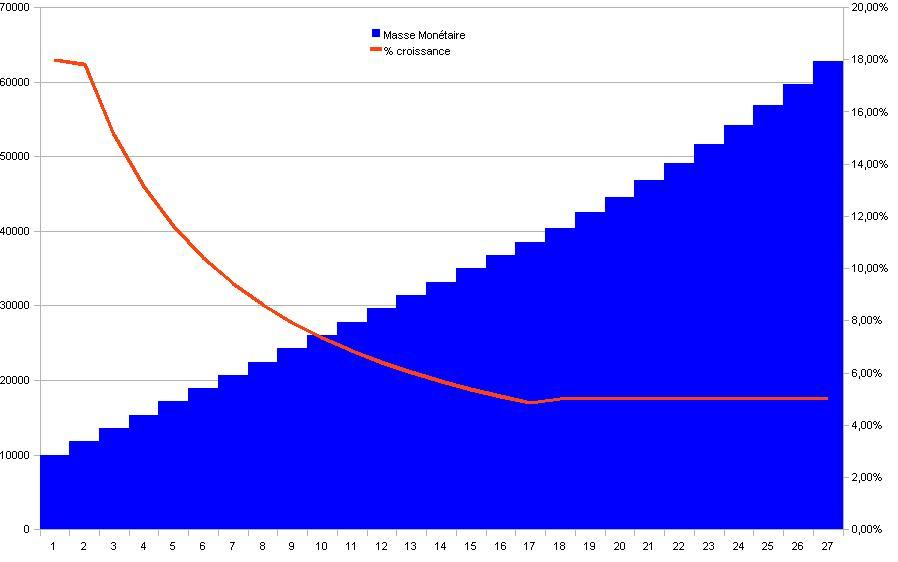
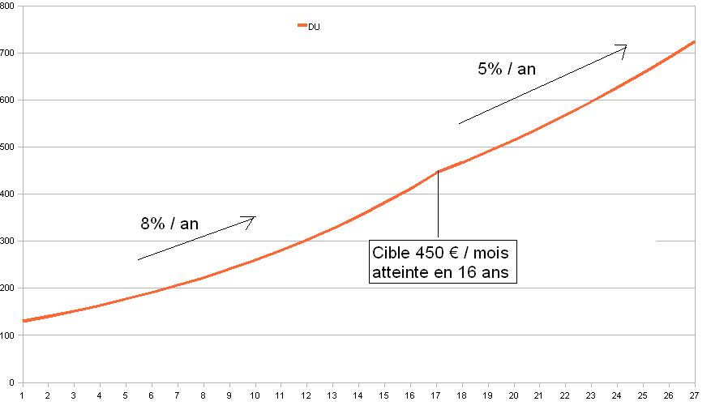

Comment installer une monnaie à Dividende Universel ?
Une monnaie à Dividende Universel peut s’installer au choix sur la base d’une nouvelle monnaie ou sur la base de la monnaie existante suivant deux approches, simple ou progressive.
Approche simple
La première approche consiste à installer un Dividende Universel initial supérieur au taux cible « c » qu’on laissera inchangé le temps que le taux de croissance de la masse monétaire atteigne « c ». À partir de ce moment-là, on augmente régulièrement le Dividende Universel suivant le taux «c ». Cette approche est particulièrement adaptée au cas d’une monnaie préexistante qui mute en Dividende Universel.
Par exemple en zone euro cette approche pourrait être effectuée sur la base des minimas sociaux déjà installés, en regroupant l’ensemble des aides sociales au sein d’un guichet unique simplifié, et en intégrant dans les salaires préexistants la mention du Dividende Universel dans le brut salarial. Ce serait une « révolution immobile » qui consisterait essentiellement en la prise de conscience du Revenu de Base comme socle de toute activité économique libre basée sur l’individu souverain, prenant toute sa part dans le système monétaire.

Approche progressive, le cas Européen
La deuxième approche consiste à allouer à chaque nouveau membre un crédit initial fixe associé à un Dividende Universel optimal dès le départ. Cette solution est particulièrement adaptée à la création d’une nouvelle monnaie au sein d’un SEL.
L’Europe nous fournit un cas tout à fait intéressant de Dividende Universel tronqué. Tronqué parce qu’une grande partie de la zone Euro ne bénéficie pas d’un revenu minimum, et qu’une autre partie bénéficie d’un revenu minimum conditionnel (donc non universel) et qui plus est très élevé. Nous avons donc des citoyens qui travaillent pour les autres sur la simple application d’une politique monétaire asymétrique. De plus les conditions pour obtenir ces revenus minimum sont extrêmement complexes, et nécessitent pour les citoyens tellement d’énergie pour demander leur part à des guichets différents, qu’une fois obtenu, il décourage très fortement l’activité économique monétisée, qui la plupart du temps consiste essentiellement en un risque de sortir des conditions d’obtention.
Le revenu minimum constaté en France ou en Allemagne est environ en moyenne de 450 € / mois (parfois beaucoup plus avec d’autres aides, mais aussi beaucoup moins si par ailleurs le citoyen s’aventure à monétiser une activité déclarée).
Si la zone euro déclarait brutalement ce niveau de DU pour les 330 millions de citoyens, cela reviendrait
{kind=link}
à un taux de 18 % de la masse monétaire, qui, à DU fixe, atteindrait le taux de croissance optimal de 5 % de la masse monétaire en 15 ans.
Le DU lui même suivrait alors cette évolution :

On pourrait objecter que cette évolution serait brusque, créant des distorsions économiques violentes et soudaines, les pays qui dans la zone sont privés de DU se voyant dotés d’un DU nouveau et élevé pourraient se voir économiquement désorganisés de façon très rapide.
On peut alors imaginer une autre stratégie de convergence plus souple, en partant du Dividende Universel calculé sur la masse monétaire 2010, de 130 € / mois / citoyen pour les citoyens privés de revenu minimum, afin de le faire converger vers une cible de 450 € / mois / citoyen dans toute la zone.
En se basant sur la croissance asymétrique forte de la masse monétaire euro de 8 % / an constatée de 2000 à 2007 (Question de Droit : pourquoi a-t-on permis à quelques-uns de bénéficier de façon exclusive de la croissance de la masse totale de monnaie COMMUNE au détriment des autres citoyens ?), on atteindrait alors très rapidement cet objectif car :

équivaut à

La même durée que selon la première stratégie ! (mais en créant moins de monnaie, et donc de façon plus progressive).
Les possibilités d’instauration progressives existent donc, c’est une simple question de fixation d’un objectif spatio-temporel défini, associé à la reconnaissance de l’égalité entre les citoyens d’une même zone monétaire devant la mesure de toute valeur, et donc devant la création monétaire.
{kind=link}
Réflexion sur le prêt à intérêts
Quelque soit le système monétaire utilisé, il convient de bien réfléchir au problème du prêt à intérêt. Si l’intérêt dépasse le taux de croissance de la masse monétaire, nous sommes dans un cas où il faut récupérer plus d’argent qu’il n’en est créé, ce qui peut s’avérer mécaniquement impossible à réaliser, indépendamment de tout niveau de production ou d’échange.
Si une zone économique autonome mais non-isolée, dont la monnaie locale a été alimentée via un prêt à intérêt inital, se voit ensuite arbitrairement privée de la création monétaire associée, alors la demande du créancier est de rendre plus de monnaie qu’il n’en existe localement. Ces cas sont des conditions de faillite forcée.
Par exemple en France en 2010, quoique la masse monétaire ait augmenté de 8 % / an de 2000 à 2007, (7 % entre 2000 et 2010 du fait de la contraction 2007 - 2010), le taux de 22 % / an d’intérêt est un taux légal, applicable en sus aux citoyens les plus éloignés de la création monétaire, donc les moins susceptibles de pouvoir rembourser. C’est la condition suffisante pour provoquer des faillites personnelles.
Mais par ailleurs prenons le cas d’un taux de croissance monétaire global de 7 % / an, avec cette monnaie supplémentaire qui n’est pas symétriquement allouée au sein de la zone, mais uniquement au bénéfice des émetteurs centraux et de leurs affiliés au centre de la pyramide de Ponzi globale. Un taux d’intérêt local de 5 %, pourtant inférieur au taux de croissance global, sera, dans ce lieu éloigné de l’émission, supérieur au taux local de croissance monétaire qui ne sera par exemple que de 1 %. Alors il s’agit là à partir du moment de l’acceptation de ce prêt, d’un cas de décroissance locale de la masse monétaire de 5 % - 1 % = 4 % / an, conduisant à une déflation locale, et donc à des faillites forcées, indépendamment de toute notion de production et d’échange de valeur.
On pourrait se dire que celui qui accepte le prêt devrait en évaluer les tenants et les aboutissants, et qu’il lui incombe d’évaluer son « risque », sauf qu’il se trouve en face d’un système Bancaire qui a lui l’accès à tous les comptes, et à des données financières globales. Il y a donc un accès asymétrique à l’information, qui permet que l’un prenne l’avantage sur l’autre. En fait l’avantage de l’émetteur de monnaie est incommensurable par rapport à l’emprunteur. Le premier a toute l’information et tout le pouvoir de la modifier, le second n’a ni l’un ni l’autre.
Avec un Dividende Universel transparent, la croissance long terme de la masse monétaire étant connue et dense dans l’économie, le taux d’intérêt fixe d’un prêt monétaire (d’une monnaie préalablement accumulée par le prêteur) ne saurait excéder légalement le taux du Dividende Universel afin d’avoir l’assurance que les conditions générales permettent d’en payer capital et intérêts. Si le « risque » s’avère démesuré pour le prêteur, la solution n’est pas d’augmenter le taux d’intérêt au-delà des conditions maximales requises, mais de prêter moins ou pas du tout.
À minima ce devrait être aussi le cas dans tout système monétaire. Le taux d’intérêt d’un prêt ne saurait excéder légalement le taux de croissance de la masse monétaire. Sans cela il est clair que les conditions ne sont pas remplies pour être certain qu’il est possible de rembourser un prêt à taux supérieur, et de tels contrats devraient être déclarés logiquement irrecevables.
Il est logiquement aberrant que la Loi n’interdise pas d’émettre des prêts à un taux d’intérêt supérieur au taux de croissance de la masse monétaire.
Réflexion sur l’impôt
Le même raisonnement que sur le prêt à intérêts, implique que l’impôt ne peut globalement PAS excéder le taux de croissance de la masse monétaire, sauf à donner à l’État une prérogative intenable sur l’initiative individuelle.
Cela signifie que dans une économie à Dividende Universel les représentants de
la collectivité, pour financer des projets collectifs par l’impôt doivent faire
leur estimation en se basant sur le nombre d’individus gérés, et connaissant le
facteur de croissance monétaire « c » n’en prenne au maximum qu’une fraction
globale la plus faible possible « f × c ». Pour le reste l’État devrait se
financer par la vente libre des biens et services qu’il produit, et ne pas
s’endetter au-delà du raisonnable étant donné le flux normal de revenus qu’il
est censé obtenir.